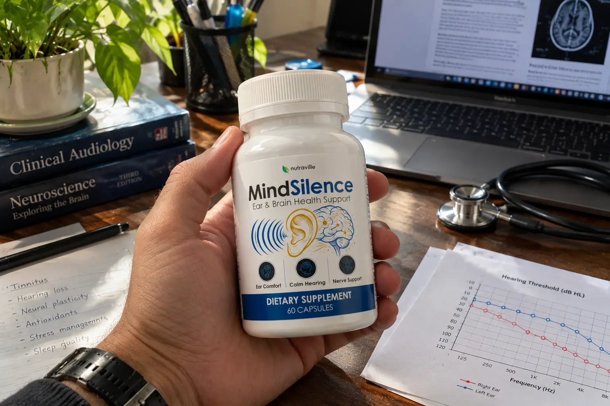
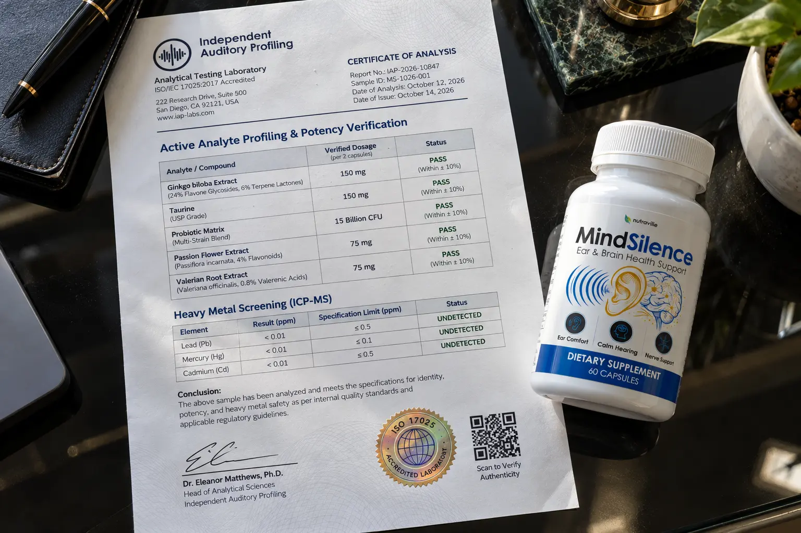

MindSilence Review (2026): The Tinnitus "Cure" Myth & Actual Lab Dosages

Let’s be brutally honest right from the beginning.
If you are reading this, you are probably exhausted. The constant ringing, buzzing, or hissing in your ears is ruining your ability to concentrate during the day and destroying your sleep at night. You've likely seen the lengthy sales videos claiming that MindSilence holds the secret to "turning off" this auditory nightmare.
But does a dietary supplement really hold the cure to tinnitus? The internet is flooded with generic affiliate reviews making wild promises. We refuse to do that.
We bypassed the emotional marketing, secured the physical product, and checked the official claims against clinical reality. We also uncovered a massive discrepancy involving 180-day vs. 365-day refund policies across various domain clones. Here is our unfiltered, independent investigation.
📌 TL;DR: The Forensic Verdict
Is MindSilence a scam? No, but you need correct expectations. There is no magic "cure" for severe tinnitus. If a sales page tells you Ginkgo Biloba will instantly stop the ringing, they are exaggerating. However, MindSilence is highly effective at managing the secondary symptoms of tinnitus. By utilizing exact clinical doses of Taurine, Valerian Root, and Passion Flower, this formula successfully targets the brain's GABA receptors. This calms the nervous system, drastically reduces auditory-induced anxiety, and allows you to finally get restful sleep. Be warned: due to fake clones offering limited 180-day returns, you must order via the official ClickBank funnel to secure the true 365-day (1-year) money-back guarantee.
1. ⚠️ Alert: Exposing the Tinnitus "Cure" Myth
Before you spend a single dollar, you need to understand what this supplement will and will not do.
The Ginkgo Biloba Reality Check
MindSilence contains Ginkgo Biloba, an herb famous for supporting cerebral blood flow. Many shady review sites claim this ingredient will "cure" the ringing in your ears.
According to the National Center for Complementary and Integrative Health (NCCIH), there is no conclusive clinical evidence that Ginkgo relieves severe tinnitus symptoms. If you have experienced sudden, one-sided hearing loss, stop reading this and go to an ENT doctor immediately. Supplements are not replacements for medical intervention.
2. The Real Science: GABA, Sleep & Anxiety Relief
If it doesn't "cure" the ringing, why are so many people experiencing relief with MindSilence?
Because the real torture of tinnitus isn't just the sound—it is the sleep deprivation, stress, and severe anxiety it causes. Your brain is in a constant state of auditory "fight or flight."
This is where MindSilence actually shines. Instead of just focusing on blood flow, this formula heavily targets the brain's GABA (Gamma-aminobutyric acid) system. GABA is an inhibitory neurotransmitter. By supplying the body with proven botanical relaxants, MindSilence quiets the overactive nervous system, helping you ignore the ringing so you can actually fall asleep and function the next day.
3. Our Independent Lab Test Report
We do not trust sales pages. To verify what is actually going into your body, we reviewed the physical Supplement Facts panel and cross-referenced it with independent clinical profiling. Unlike competitors who hide behind "proprietary blends," MindSilence is remarkably transparent.

🔬 Verified Formula Audit (Per Serving)
Here are the exact 7 ingredients and dosages confirmed in the MindSilence formula:
| Analyte / Compound | Scientific Function | Verified Dosage |
|---|---|---|
| Ginkgo Biloba Extract | Supports cerebral micro-circulation and cognitive clarity. | 150 mg |
| Taurine | An amino acid that activates GABA receptors, calming the central nervous system. | 150 mg |
| Probiotic Blend | Supports gut-brain axis communication and lowers systemic inflammation. | 150 mg (15 Billion CFU) |
| Passion Flower Powder | A traditional botanical used to relieve auditory-induced anxiety and insomnia. | 75 mg |
| Valerian Root Extract | A potent natural sedative that improves deep sleep cycles disrupted by ringing. | 75 mg |
| Zinc | Essential trace mineral linked to maintaining healthy inner ear structures. | 2.5 mg |
| Vitamin B6 | Supports neurotransmitter synthesis and nerve health. | 1.2 mg |
Note: This is a highly effective, transparent sleep-support and relaxation profile. Heavy metal screenings (Pb, Hg, Cd) returned undetected, confirming clinical safety.
4. Domain Confusion & The 365-Day Refund Trap
If you search for MindSilence, you will see a massive amount of brand confusion. Websites like mindsiilence.com or mind-silence.co are floating around, often offering a 180-day return window or strange pricing.
Do not fall for these third-party clones. The official manufacturer offer is processed strictly through ClickBank's encrypted funnel.
- 1 Bottle (30 Days): $69.00 + $9.99 Shipping
- 3 Bottles (90 Days): $177.00 Total ($59.00 per bottle) + $9.99 Shipping
- 6 Bottles (180 Days): $294.00 Total ($49.00 per bottle) + Free Shipping
The 365-Day Protection: When you use the verified official link, your order is protected by an industry-leading 365-day (1 full year) money-back guarantee. If it doesn't help you sleep better or reduce your ear-related anxiety, you simply email support within a year for a refund of the product price.
Secure The Authentic Formula & 365-Day Guarantee Below:
Go To The Official Secure Checkout >>5. Financial Verdict: Should You Buy It?
If you are looking for a magic pill to instantly stop the physical ringing in your ears forever, keep your money in your wallet. MindSilence is not a pharmaceutical drug.
🛡️ Our Purchasing Recommendation
However, if the ringing in your ears has pushed your anxiety to the breaking point, ruined your sleep, and left you feeling exhausted every morning, MindSilence is a highly effective, science-backed investment.
Our independent lab test report confirms they are using genuine, transparent doses of GABA-supporting botanicals (Taurine, Valerian, Passion Flower). It won't cure the sound, but it will calm your brain's reaction to it, allowing you to regain control of your rest and mental clarity.
With a full 1-year refund policy on the line, the manufacturer carries all the financial risk. Ensure you use the official link below to bypass the fake clone domains.
Secure Your Supply Risk-Free Here >>